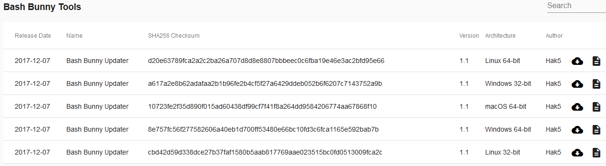
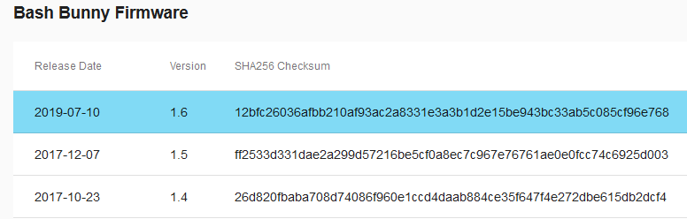
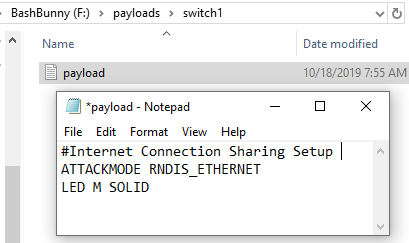
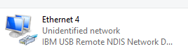
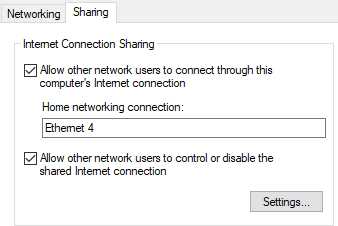
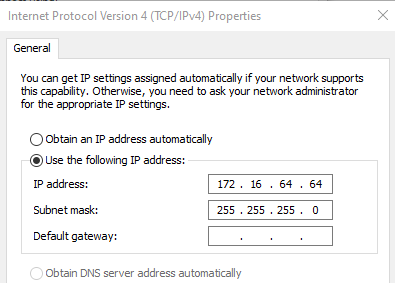
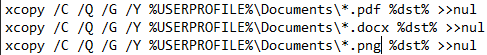

nifty-bash-bunny
Nifty Assignment - Bash Bunny
Contents
- Background
- Meta Information
- Additional Descriptions
- Target Audience
- Device
- Setup
- Initial Setup & Update
- Version Verification
- Share Internet
- Install Utilities (Optional)
- Download PuTTY (Optional)
- Connect to Bash Bunny via PuTTY (Optional)
- Assignment Instructions
- Payload Development (Optional)
- Starter Code
- Model Grading Criteria
- Additional Information
Background
The Bash Bunny is a dynamic USB attack platform developed and distributed by Hak5. The Bash Bunny was released in 2017 with immense community support and payload development commenced shortly after release. The Bash Bunny was an expansion of the popular USB Rubber Ducky with greater functionality and can mimic trusted USB devices and execute preprogrammed attacks, so the offensive capabilities and applications vary. The Bash Bunny may be configured and reconfigured between a human interface device (HID) (think keyboard, similar to Rubber Ducky), ethernet adapter, or mass storage; as such, the device is dynamic and may be reconfigured to meet desired needs and systems.
Meta Information
| Attribute | Description |
|---|---|
| Summary | Bash Bunny—Download and refine a Bash Bunny payload which is capable of exfiltrating specified file types from target destinations. |
| Topics | Hak5, Bash Bunny, Exfiltration, Powershell |
| Audience | Students who are familiar with Powershell and an interest in technology gadgets. This assignment, when expanded, may be an appropriate baseline for a high school student’s senior project. |
| Difficulty | While designed to be a simple assignment in practical application, the expansion of this assignment may encompass complex Powershell scripting, python coding, advanced frameworks such as Metasploit. A basic knowledge of Powershell will be helpful in starting out. If no prior experience, there will be a steep learning curve. |
| Strengths | Introduction to a modern technological gadget that will interest and engage students, teasing out thought and creativity throughout the project. |
| Weaknesses | May be difficult to grasp Powershell, Python, or other utilities such as Impacket or Responder without prior knowledge or experience. In the endeavor of improved performance, there should be a heavy reliance on independent research and effort to gain a functional knowledge of the potential utilities. |
| Dependencies | Bash Bunny, Internet Access |
| Variants | Expansion of assignment to exfiltrate a wider variety of file types. Additionally, the focus may be expanded to more advanced payloads. |
Additional Descriptions
| Assignment Description | This assignment is meant to be a hands-on example of practical application using a popular technological tool. |
| Structure Description | The assignment is structured to guide the student from the beginning in getting familiar with the tool while opening to allow creativity with the final deliverable. |
| How It Works Description | The Bash Bunny uses special but plain text syntax to perform actions through payloads. This assignment focuses on exfiltration of documents from a computer, a common objective in penetration testing. The assignment is meant to be introductory in nature but as the foundation for a much larger project. |
Target Audience
Operating System: Windows
This primer paper on the Bash Bunny is written and intended for Windows machines, specifically Windows 10. Mac and Linux devices may have differing commands and verbiage that may confuse and impede would-be users from following this paper. For example, to share ethernet with the Bash Bunny the ATTACKMODE for Windows is RNDIS_ETHERNET; on Mac/Linux/Android devices the standard is ECM_ETHERNET. The ethernet configuration example above is just one of the many differences between device configuration; if on a device other than Windows this primer may still be read for concept even though many configuration settings will be different.
User: High School Seniors
This primer paper is written and intended to introduce high school seniors to the Bash Bunny with the intention of being the basis of a Senior Project over the course of several weeks.
Device
The Bash Bunny looks like a standard USB device with a switch and an LED light. There are three modes by default on the Bash Bunny that are accessible via the switch on the side of the device. There are two ‘attack modes’ (switch positions 1 & 2), and the arming mode (switch position 3). By default, switch position 3, arming mode, is utilized to enable and manage serial and mass storage. Any modifications to the payloads in the switch 1 or 2 folders on the device will be conducted while the Bash Bunny is in arming mode. The following image, taken from the Hak5 wiki page for the Bash Bunny, illustrates the three switch positions.

Additional notes
(1) While it is possible to configure switch position 3, arming mode to perform another payload when the device is plugged in, that functionality and configuration is outside the scope of this primer paper. (2) The Bash Bunny should be ejected and unplugged prior to changing the switch position on the device. For example, while in arming mode a payload is added to the switch position one folder--the device should be ejected from the computer, unplugged, switch changed to switch position 1, then plugged back into the computer. (3) Do not edit payloads directly on/from the Bash Bunny. Copy and paste the files to be edited onto your local machine.
Setup
As a dynamic attack platform, the Bash Bunny may be viewed as complex and the operation of the device as overwhelming to any who have not previously configured or utilized the device. The steps below should be taken in order to configure the Bash Bunny.
Initial Setup & Update
- Plug Bash Bunny into computer while in arming mode (switch position 3).
- Navigate to the downloads section at the Hak5 site at the following url: https://downloads.hak5.org/bunny
- Scroll down to the section titled “Bash Bunny Tools” and download the corresponding version for your machine by pressing the cloud download button.
- 
- When the popup window appears select “Save File.” If you have previously elected to automatically perform the action of saving skip this step.
- Navigate to your Downloads and select the file that was just downloaded. Extract all to the root of the Bash Bunny. Do not nest the extraction within any folders.
- From the Bash Bunny, double click to run ‘bunnyupdater.exe.’ The executable should have a red circle as the icon.
- When you click on the executable, a new popup window will open. There is one option--Press ‘0’ and Press ‘Enter.’ Bunnyupdater will run and update your device. Do not unplug or otherwise modify your device or device contents after beginning the update.
- When the download is complete (the display screen will say when the update is complete), eject the Bash Bunny, unplug, and replug the device into the computer (still in switch position 3). The device may require further update.
- The device will have a solid blue flash if no updates are being performed.
- If no updates are being performed after the device is plugged in, run the bunnyupdater again. Running the bunnyupdater again will update and sync the GitHub repository. When the updater is finished, the window should look like the following:
- At this point, the Bash Bunny should be up-to-date. The bunnyupdater may be run periodically to ensure the firmware and included payload repository are up-to-date. It is important to remember not to disconnect the Bash Bunny during an update.


Version Verification
As of the writing of this primer, the Bash Bunny is on version 1.6. To check your version, select the ‘version’ text file from the device and ensure that your device has updated to the most recent with the bunnyupdater. You may cross-reference the firmware version with the most recent from the Hak5 Downloads page in the section titled “Bash Bunny Firmware.”


Share Internet
Sharing internet from the host machine to the Bash Bunny will allow you to install third party software which will greatly enhance the functionality of the Bash Bunny. Follow the steps below to setup internet sharing with the Bash Bunny:
- Create a new plain-text file setting the ATTACKMODE to RNDIS_ETHERNET.
- Optionally, you can set the LED to one of the various colors or for default, for example, setting LED G SOLID will display a solid green LED color.
- Save the text file as “payload.txt.”
- With the Bash Bunny in arming mode (switch position 3), copy and paste the “payload.txt” previously created into the folder for switch 1. Access switch1 folder by selecting ‘payloads’ from root then selecting ‘switch1.’ 
- Eject and unplug the Bash Bunny. Change the switch to position 1 and plug the Bash Bunny back into the computer.
- From the Windows search bar, type “ncpa.cpl” and press enter.
- Identify the Bash Bunny, which may look similar to the following: 
- Right-click on your personal active Internet interface and click “Properties.”
- Select the ‘Sharing’ tab and check the box to “Allow other network users to connect through this computer’s internet connection.” Ensure that the Bash Bunny is selected from the drop-down menu. 
- Select ‘OK’ and close the menu.
- Right-click on the Bash Bunny Ethernet interface (In this example Ethernet 4) and select “Properties.”
- Click “Internet Protocol Version 4 (TCP/IPv4)” and Click “Properties.”
- Change the IP address in the field to “172 . 16 . 64 . 64.” Leave the subnet mask as “255 . 255 . 255 . 0.” 
- Click “OK” on the IPv4 Properties page and close the Ethernet Properties page as internet connection sharing is enabled.

Install Utilities (Optional)
For more advanced payloads, additional tools may be required to run the payloads. To install the utilities, follow the directions below:
- Navigate to the forums at Hak5.
- https://forums.hak5.org/topic/40971-info-tools/
- From the pinned post at the top of the forum, download the .deb files.
- With the Bash Bunny in switch position 3, arming mode, insert the Bash Bunny into the computer. Copy the .deb files downloaded in step 2 into the /tools/ folder on the Bash Bunny.
- Unplug the Bash Bunny and reinsert the device into the computer, leaving the Bash Bunny in switch position 3. The solid magenta LED indicates that updates are in progress.
- Load a payload with ATTACKMODE RNDIS_ETHERNET into switch1 then eject and unplug the device.
- Access the Shell through PuTTY or another terminal emulator and perform updates by running the following commands:
- apt-get update
- apt-get upgrade
Download PuTTY (Optional)
The following instructions guide the user through downloading PuTTY, a terminal emulator and is necessary to SSH into the Bash Bunny. If you already have PuTTY installed, you should skip this section; alternatively, if you have another terminal emulator that you are familiar with, you may utilize that instead.
- Navigate to the website https://www.chiark.greenend.org.uk/~sgtatham/putty/latest.html and select appropriate package manager for your machine.
- If unsure whether your device is 32 or 64-bit, search “about” in the device explorer and select “About your PC.” Scroll down and review the “System type” under ‘Device specifications.’
- Save the Windows Installer Package.
- Navigate to the Downloads section and run the Installer Package following the installer prompts.
Connect to Bash Bunny via PuTTY (Optional)
PuTTY is a free, open source terminal emulator that supports several different network protocols including secure shell (SSH). By connecting to the Bash Bunny through SSH you may install third party software which will greatly enhance the functionality of the Bash Bunny. To connect to the Bash Bunny via SSH, follow the steps below:
- Follow Steps 1-4 from the Share Internet section above to prepare the Bash Bunny.
- Open PuTTY.
- From the very top option on the left column, Session, input the static IP address that we established in the previous section (172.16.64.1).
- Press ‘Open.’
- Login as: root
- The default password for the Bash Bunny is “hak5bunny.”


Assignment - USB Simple Extraction
There are several different categories that payloads may fall into. Often, penetration testing involves the exfiltration of critical sensitive data from a company computer. The payload outlined herein, shared in the Hak5 GitHub repository by author DanTheGoodman, should be included in the payloads downloaded and readily available on the device.
Assignment Instructions - Copy & Run Payload
- With the Bash Bunny in switch position 3, arming mode, insert the Bash Bunny into the computer.
- Navigate to BashBunny/payloads/library/exfiltration/simple-usb-extractor.
- Select and copy all of the files (five) from within ‘simple-usb-extractor.’
- Navigate to BashBunny/payloads/switch1.
- Delete any current files from within switch1.
- Paste the files you previously copied from ‘simple-usb-extractor.’
- Eject and unplug the Bash Bunny from the computer.
- Change the Bash Bunny to switch position 1 and plug the device into the computer.
- Do not touch the keyboard or mouse or you may interfere and cause the payload to fail.
- At the end of the attack, the ATTACKMODE will change to STORAGE. From the main directory, navigate to loot/USB_Exfiltration. The folder within USB_Exfiltration will change based on the computer name and time the payload was run.
- a. Inside the folder should be PDF and Microsoft Word documents that were saved within Desktop, Downloads, or Documents on the computer the payload was run.

Assignment Instructions - Edit Payload
- Copy and paste the contents of ‘usb-simple-exfiltration’ to a directory of your choosing on your local device.
- To edit Windows Command Script, Right-click and select Edit on the Windows Command Script titled “x.”
- Review the code. Duplicate a line of the xcopy command and add a new file extension, example below. 
- Add xcopy commands to round out and widen the variety of files that may be extracted with the Bash Bunny.
- Pay attention to the differences searching within Desktop, Documents, and Downloads and ensure the commands are adjusted appropriately.
Payload Development (Optional)
A condensed guide on syntax for payload development may be found at the Bash Bunny wiki at https://wiki.bashbunny.com/#!payload_development.md. Information on the wiki about Bunny Scripts include that of ATTACKMODE and ATTACKMODE combinations, LEDs (colors, patterns, & states), QUACK command, as well as a best practice and style guide for development.
Alternatively, the Hak5 website, located at https://docs.hak5.org/hc/en-us/categories/360000982534-Bash-Bunny, provides additional documentation separated by category.
Starter Code
The original code set has been archived and is available should the code utilized by author DanTheGoodman be edited, removed, or otherwise unavailable to the student.
Model Grading Criteria
Upon successful completion of this assignment the student’s program should exfiltrate specified file types from different locations on the computer to a loot folder located on the Bash Bunny. The student should have expanded or elsewise modified the given code to perform the specified actions and be able to generally explain how the payload operates.
Additional Information
For more information about the Bash Bunny, the following community resources may be useful:
- Hak5 site directory for Bash Bunny (https://shop.hak5.org/products/bash-bunny
- Bash Bunny wiki (https://wiki.bashbunny.com/#!index.md)
- Hak5 Bash Bunny Forums (https://forums.hak5.org/forum/92-bash-bunny/)
- Hak5 GitHub community payloads (https://github.com/hak5/bashbunny-payloads)